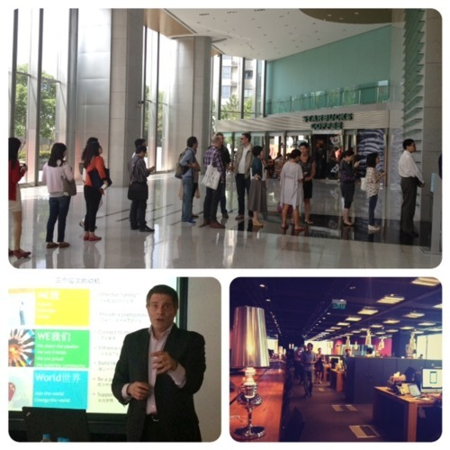
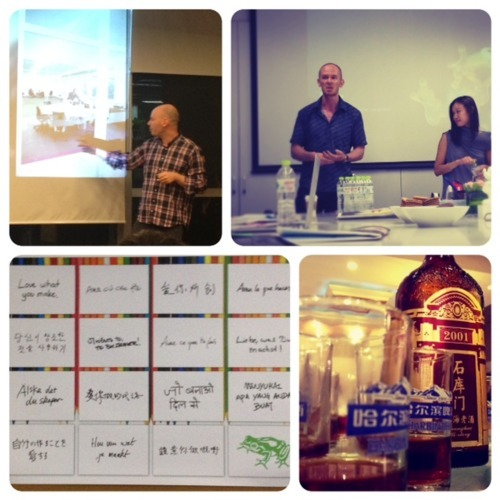

One thing I dislike is doing anything obscure without knowing the objectives. Writing a daily journal for Asia Module fall on this category. I simply failed to see the reason behind the assignment. And allow me to stress the word ‘obscure’ here, because I know that certain assignment carries some merits, whether we like it or not.
Are we going to get grade on this journal? If so, based on what metrics? Diary writing is a very subjective thing. But let’s say we entertain the idea that there will be no grading for this assignment, but instead there will be post where all journals will be shared. Now, that I can live with. At the very least, I’d be curious to read what others wrote on their daily journal. However, if I’m going to spend my time writing this journal only to be filed and forgotten in some dusty hard disk, then tell me now so I won’t waste my time doing so.
–

I’ve decided that from this moment on, for the sake of minimizing my criticism on mediocrity, I will limit my alphanumeric input on this school journal strictly to session(s) that actually manage to gain my attention. Those that are free of jargons, outdated viewpoints and shallow analysis.
Having said that, I will start by skipping the session held at JWT Shanghai. I disagree with a lot of points that Tom Doctoroff said in his presentation, which was probably done by some interns judging by the mediocre content it delivers. One thing that I’d like to single out was again the fact that him and Kitty Lun repeatedly said about lack of creative talent in China that can lead/direct in high profile position. That’s nonsense, but of course it took some frogs to prove my points.

As Mario van der Meulen, Creative Director at frog Shanghai, stressed out that we need to be involved when it comes to finding, mentoring and nurturing creative talents in China. There’s no lack of creative talent out there if we know where and how to search for them. And to their credits, frog was the first (and only) firm during the Berlin School Shanghai module that actually involved a Chinese Art Director in their session. Proving the notion that Chinese-led creative position is not a myth. And if I may second this, at Trigger Shanghai, the top three leading position in Design, Technology and Project Management are all led by Chinese. Through years of mentoring and nurturing, this is not an impossibility.
–
Wednesday is always my geeky day, and since sharing is caring, I decided to invite some classmates to the Hacker Space Shanghai and introduce them to the young makers and thinkers on the ground. As luck would have it, Wednesday is where hackers, makers and thinkers share and showcasing what they’ve been working on. We had one of our classmate, Axel Quack, showcasing what FabLab Germany has worked on. It’s incredibly awesome that creativity and passion for open source technology can be shared across boundary.
One word to connect them. Geek.
–
photos:
(top) Yes, people apparently knows how to queue in China. Session at JWT.
(bottom) Session at frog Shanghai. Axel (left) presenting at HackerSpace, followed by Chinese dinner 在保罗 in which the night is not complete without sampling some Chinese liquor.